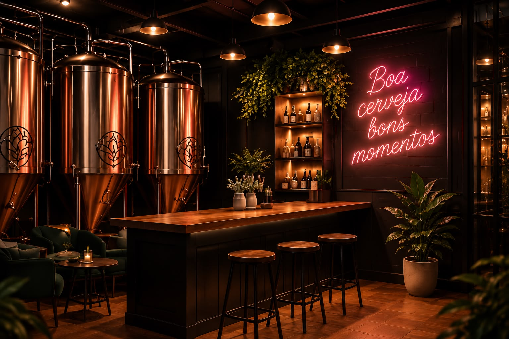
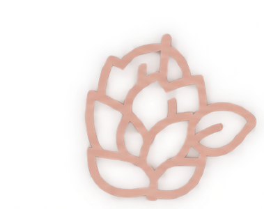
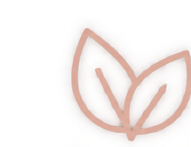
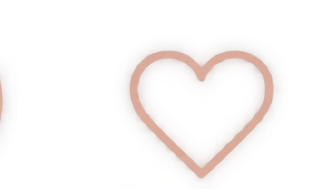

Sabores que Conectam Pessoas
Cervejas artesanais, boas conversas e momentos inesqueciveis.
Sobre nós ➔
Sobre nós
Mais que cerveja, é sobre pessoas.
A empresa Brisa nasceu da paixão por boas cervejas e pelos momentos que elas proporcionam. Aqui, cada rótulo é uma história, cada gole é uma experiência.

Ingredientes selecionados

Produção artesanal
